Valheim
Viking purgatory survival with one of the best building systems in the genre.
Review
Valheim is one of the most remarkable Early Access launches in Steam history. A 5-person indie studio released a survival-exploration game in February 2021 and sold 10 million copies within two weeks, becoming a phenomenon driven almost entirely by word of mouth. Set in a procedurally generated Norse purgatory, you explore biomes of increasing danger — Meadows, Black Forest, Swamp, Plains, Mistlands — each gated by the boss of the previous region, creating a structured progression unusual in the survival genre.
The building system is Valheim's greatest achievement: one of the most intuitive and structurally physics-based construction systems in any survival game. Beams and supports must actually bear structural weight — you cannot simply float unsupported horizontal spans. Foundations matter. Roofs must be angled correctly. The result is that building in Valheim demands genuine architectural thinking, and the lo-fi textures combined with Valheim's extraordinary dynamic lighting create screenshots of genuine beauty.
Combat is more deliberate and timing-dependent than many genre peers — stamina management during boss fights carries real consequence. The cooperative multiplayer, supporting up to 10 players on a server, makes boss hunts and base construction enormously satisfying social activities. The major weakness is the late-game resource grind: later biomes require materials in quantities that become tedious, and the content curve flattens in the endgame. Updates have been slow but consistent. At its price point, it delivers exceptional value.
Strengths and Limits
- Building system is one of the genre's best — structural physics add real creativity
- Stunning atmospheric lighting despite lo-fi visual style
- Procedural world generation creates diverse, surprising environments
- Boss progression gives the survival loop clear, satisfying milestones
- Excellent co-op for up to 10 players
- Late-game resource requirements become a significant grind
- Update pace has been slower than community hoped
- Endgame content thins noticeably — progression plateaus
- Combat can feel repetitive outside of boss encounters
Reader Fit
This review is written around fit: who should play it, what kind of session it rewards, and what friction might make it wrong for another reader. A high grade does not mean every player should buy it immediately. It means the game has a clear identity, a strong reason to exist, and enough craft to justify attention from the right audience.